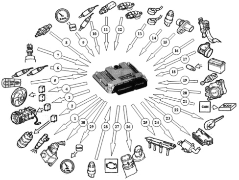
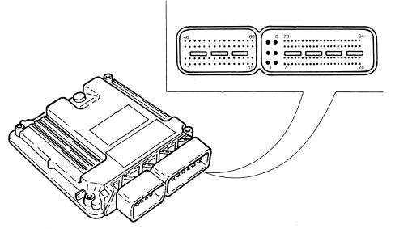
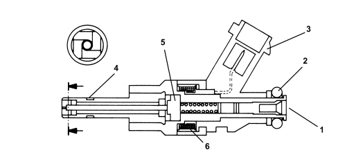
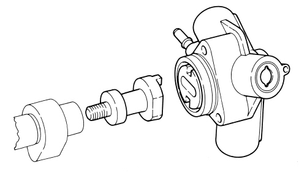
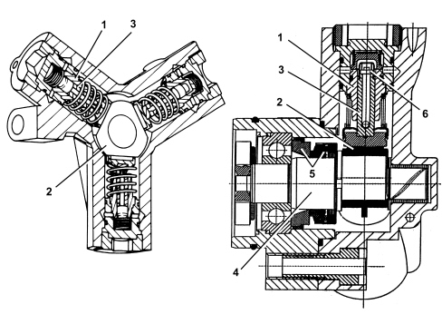
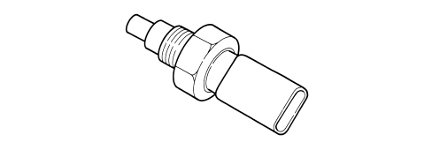
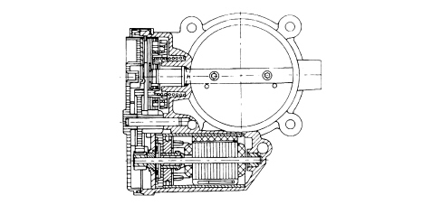
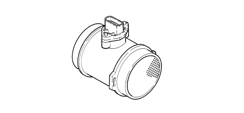
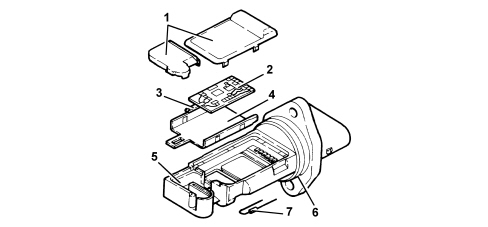

INTRODUCTION - PETROL FUEL INJECTION SYSTEM
- Path
- Descriptions > 10 ENGINE > 1056 PETROL INJECTION SYSTEM > INTRODUCTION - PETROL FUEL INJECTION SYSTEM
- Kind
- system description
- Applies to
- engines: 2.2 JTS; all production periods
- Interactive page
- https://sloeber94.github.io/elrnDB-aBrrSpdr/en/#/946001188
Applies to: engines: 2.2 JTS; all production periods
OPERATION OF THE INJECTION-IGNITION SYSTEM
The Bosch Motronic MED7.6.1 system with a motorized throttle belongs the category of systems integrated with:
- ignition,
- phased sequential electronic injection.
The control unit controls the air flow rate at the idling speed set by the electronic throttle.
The control unit controls the ignition time, with the benefit of maintaining smooth engine operation even when environmental and applied load parameters change.
The control unit controls and manages injection so that stoichiometric air/fuel ratio is always within optimum limits.
The main system functions are essentially as follows:
- self-learning;
- system self-adaptation;
- self-diagnosis;
- recognition of the Alfa Romeo CODE (immobilizer);
- cold starting check control;
- control of combustion - Lambda sensors;
- phase transformer control;
- detonation control;
- control of mixture enrichment during acceleration;
- fuel cut-off when accelerator pedal is released;
- fuel vapour recovery;
- control of maximum rpm;
- high pressure fuel pump control;
- connection with the climate control system;
- cylinder position recognition;
- control of optimum injection time for each cylinder;
- adjustment of ignition advance;
- idle speed management (also dependent on battery voltage);
- fan control;
- connection with ABS/ASR control unit;
- connection with the control panel;
- fuel system diagnostics;
- catalytic converter diagnostics;
- misfire detection;
- Lambda sensor diagnostics.
Injection system
The essential conditions to be met by the air-fuel mixture for efficient operation of engines with controlled ignition systems are mainly as follows:
- the metering (air/fuel ratio) must be kept as close as possible to stoichiometric levels to assure maximum catalytic converter conversion capacity (max. efficiency);
- the homogeneity of the mixture, consisting of petrol distributed throughout the air as finely and uniformly as possible.
Information that the control unit processes to control optimum metering is received by electrical signals emitted by:
- air flow meter and air temperature sensor, for the exact quantity of air taken in;
- rpm sensor that generates an alternating single-phase signal whose frequency is an indicator of engine rpm;
- accelerator pedal with built-in potentiometer to recognize the conditions requested by the driver;
- coolant temperature sensor on the thermostat;
- Lambda sensors to measure exhaust gas oxygen content.
Ignition system
The ignition system is the static, inductive discharge type (i.e. without a high tension distributor).
The system has a single coil for each spark plug with an integrated power stage; the advantages of this solution are:
- lower electrical overload;
- guaranteed constant discharge at each spark plug.
At the idle speed only the ignition coils receive a dual pilot signal (two ignitions) and one signal only (single ignition).
The control unit contains a memory map with a set of optimum ignition advance values (for the cylinder in combustion phase) that the engine can adopt according to the required speed and engine load.
The control unit corrects the advance value mainly on the basis of:
- engine coolant temperature;
- intake air temperature;
- detonation.
Information that the control unit processes to operate the single coils is received by electrical signals emitted by:
- air flow meter and air temperature sensor, for the exact quantity of air taken in;
- rpm sensor that generates an alternating single-phase signal whose frequency is an indicator of engine rpm;
- detonation sensor, to recognize the cylinder with detonation and correct the ignition advance;
- throtle potentiometer to recognize minimum, partial and full-gas load conditions;
- timing sensor.
The control unit uses the rpm signal to recognize misfiring that could damage the catalytic converters.
Operation
Diagram showing information entering/leaving the control unit

1. Injectors
2. Fuel pump
3. Air conditioning compressor
4. Engine cooling fan
5. Cruise Control system control
6. Lambda sensor downstream of the catalytic converter
7. Air conditioning system gas pressure linear sensor
8. Brake pedal switch
9. Speedometer signal
10. Lambda sensor upstream of the catalytic converter
11. Coolant temperature sensor
12. Timing sensors
13. Detonation sensors
14. Fuel pressure sensor
15. Rpm sensor
16. Accelerator pedal potentiometer
17. Flow meter
18. Battery
19. Clutch pedal switch
20. Motorized throttle body
21. CAN line
22. Alfa CODE
23. Diagnostic socket
24. Fuel vapour recirculation solenoid valve
25. Ignition coils
26. Phase transformer solenoid valves
27. Injection warning light
28. Oil pressure switch
29 - Engine rpm signal
30 - Fuel pressure regulator
System operating logics
Self-learning
The control unit implements the self-learning logic in the following conditions:
- installation of a new injection control unit,
- installation of a new throttle body actuator integrated with D.V.L.
- installation of a new modular intake manifold.
The self-learning values for the integrated throttle body with D.V.L. are preserved with the battery disconnected.
The learning values for the flywheel for recognizing misfiring are, on the other hand, lost.
System self-adjustment
The control unit is equipped with a self-adjustment function that is designed to recognize the changes that take place in the engine due to the processes of bedding in and ageing of both the components and the engine itself in time.
There are two adaptive functions depending on the two intervention plans: minimum and utilization.
Self-diagnosis
The control unit auto-diagnostic system checks that the system is working properly and signals any irregularities by means of an MIL warning light in the instrument panel with a standardized ideogram and colour laid down by European regulations. This warning light indicates engine management faults and also faults detected by EOBD diagnostic strategies.
The MIL warning light operating strategy is as follows:
- with the ignition on, the warning light comes on and remains on until the engine has been started up. The control unit self-diagnostic system checks the signals coming from the sensors comparing them with the permitted limits.
Fault indication during start up:
- the failure of the warning light to go out when the engine has been started indicates that there is an error memorized in the control unit.
Fault indication during operation:
- the warning light comes on in flashing mode to indicate possible catalytic converter damage due to misfiring;
- the warning light comes on in constant mode to indicate the presence of engine management or EOBD diagnostic errors.
RECOVERY
From time to time the control unit defines the type of recovery according to the components that are faulty. The recovery parameters are managed by components that are not faulty.
Cold starting check
In cold starting conditions, the mixture naturally becomes leaner and this gives rise to low fuel evaporation at low temperatures:
- fuel condensation on inner walls of the intake manifold;
- increased lubrication oil viscosity.
The electronic control unit detects this condition and corrects the injection time on the basis of:
- coolant temperature;
- intake air temperature;
- battery voltage;
- engine rpm.
The ignition advance is determined solely on the basis of rpm and coolant temperature.
During the start-up stage, the control unit sends an initial simultaneous injection command to all injectors (full-group injection). Once cylinder phase has been detected, normal phased sequential operation can begin. At idle speed the injection angle is 45° before T.D.C.; at other speeds the injection angle varies between 310° and 370° before T.D.C. to allow the homogeneity of the mixture.
While the engine is warming up, the control unit operates throttle body built into the DVL to modulate the amount of air required to ensure engine revs are high enough to keep the engine running.
The rotation speed is decreased as the temperature increases until the rated level is reached with the engine warm.
Combustion - lambda sensor check
In EOBD systems, the Lambda sensors are all the same type and are located upstream and downstream of the catalytic converter.
The upstream sensors monitor concentration and are known as the 1st loop (closed loop of upstream sensors). During idling the information from the upstream Lambda sensors is not used for correcting the mixture strength.
The sensors downstream of the catalytic converter are used to for converter diagnostics and to fine-tune 1st loop control parameters.
The second loop is therefore adaptive to make up for production discrepancies and slight drift that upstream sensor responses could experience due to ageing and contamination.
This control is known as 2nd loop control (downstream sensors closed loop).
Phase transformer control
In order to ensure the optimum quantity of air introduced by the engine, the control unit controls:
- the intake timing in two angular positions.
The control unit sets the open stage at the maximum torque speed:
- cam advance of 25° engine.
The control unit sets the closed stage at the maximum power speed:
- cam in normal position.
The control unit sets the closed stage at the idle speed:
- cam in normal position.
In the other engine operating conditions, the control unit selects the most suitable configuration for optimum performance, consumption and emissions.
Detonation control
The control unit may delay ignition selectively for a particular cylinder on the basis of a combination of parameters received from knock and timing sensors and:
- reduce ignition advance in 3° steps to a maximum of 9°;
- update the threshold to take into account underlying noise levels and engine ageing.
During acceleration, the control unit uses a higher threshold due to the higher engine noise.
When the knock disappears, the control unit increases ignition advance in 0.75° steps until recovery is complete.
The control unit with a self-adaptive function:
- stores advance reductions that are repeated continuously;
- adjusts mapping to the various different engine service conditions.
RECOVERY
If the timing sensor or knock sensor or injection control unit should fail, a variable ignition delay is implemented on the basis of rpm and engine temperature. Maximum ignition delay is always less than 9° engine.
Control of enrichment during acceleration
In cases of high acceleration demand, the control unit modifies injection time and throttle position.
RECOVERY
The control unit replaces the signal from the faulty air flow meter with a signal from the potentiometer built into the throttle body actuator integral with the DVL.
Fuel cut-off when the accelerator pedal is released
The control unit with:
- detection of idling status;
- rpm above a certain threshold;
deactivates fuel injection on the basis of:
- rpm;
- engine temperature;
- vehicle speed.
Before reaching idling level, the rpm descent rate is assessed. If this exceeds a certain level, fuel injection is partially re-activated to ensure that engine rpm drops smoothly to idling level.
Once idling speed has been reached, normal functions are resumed.
Fuel vapour recovery
Fuel vapours (pollutants) collected in the activated carbon filter (canister) are directed to the intake ports to be burnt.
This takes place by means of a solenoid valve operated by the control unit which alternates phases in which it is open (canister scavenging stage) with phases in which it is closed (carburation learning stage).
During this opening stage, the opening duty-cycle for the solenoid valve is regulated by the control unit in order to eliminate the fuel vapours without altering the engine carburation.
Maximum rpm check
According to the rpm level reached by the engine, the control unit:
- above 6800 rpm, cuts off the fuel supply to the injectors (rpm can rise to a peak of 7000 rpm for a period no longer than 5 secs.);
- below 6600 rpm, injector operation is resumed.
Connection with the climate control system
The compressor takes up power from the engine when the climate control system is activated.
When idling, the control unit adjusts air flow to the new power requirement. This offers the benefit of maintaining optimum driveability.
The control unit manages the exclusion of the compressor:
- over 6500 rpm;
- above a set engine coolant temperature threshold (117°C);
- upon start-up.
Recognition of cylinder position
During each engine revolution, the control unit detects the cylinder in combustion phase: controls the injection and ignition sequence for the appropriate cylinder.
If the timing sensor is faulty, the control unit implements the following strategies:
- with the engine running, it ensures the engine runs correctly due to its memorized cylinder sequence;
- if the engine is turned off and restarted, the ignition is activated for coil pairs with a lost spark. Knock control is deactivated and a fixed delay is applied for all cylinders.
Check on optimum injection time for each cylinder
The control unit computes the optimum injection time for each cylinder on the basis of special maps:
- it modifies the injection opening start point;
- it maintains the closure point determined by the mapping, selected on the basis of rpm;
- fuel injection is sequential and phased for each cylinder (S.E.F.I.).
Adjustment of ignition advance
The control unit processes the signals coming from the sensors and determines:
- ignition advance for each cylinder;
- ignition delay for the relevant cylinder (affected by detonation).
Idle speed check
The control unit detects idling status when the accelerator pedal is released.
The control unit controls the idle speed ignoring the signal from the Lambda sensors, depending on the consumers switched on and the brake-clutch pedal signals and adjusts the injection times.
at idle speed the injection angle is 45° before T.D.C.; at other speeds the injection angle varies between 310° and 370° before T.D.C. to allow the homogeneity of the mixture.
Fan control
Depending on the temperature of the coolant, the control unit controls the engagement of the fan:
- 1st speed activation temperature 97°C;
- 2nd speed activation temperature 102°C.
If the air conditioning system is switched on the control unit controls the engagement of the fan 1st speed.
When no coolant temperature signal is present, the control unit implements the recovery function by activating the fan at the 2nd speed until the error disappears.
Before the fan is deactivated, the throttle opening is increased to prevent engine rpm from falling.
Connection with abs/asr control unit
Communication between the engine management control unit and the ABS/ASR control unit is via the CAN line available at both control units.
If the wheels slip (indicated by the ABS/ASR control unit), the control unit reduces the drive torque by:
- reducing the ignition advance;
- reducing the throttle opening angle.
Brake servo vacuum check
Depending on the signal coming from the vacuum sensor fitted on the brake servo, the control unit alters the position of the motorized throttle, updates the injection parameters and switches off the air conditioning compressor if necessary in order to maintain optimum vacuum values in the brake servo circuit.
INJECTION-IGNITION SYSTEM COMPONENTS
Med7.6.1 injection-ignition control unit
The control unit is fitted in the engine compartment on the battery drip tray.
The control unit memory is the flash EPROM type, i.e. it can be reprogrammed from the outside without affecting the hardware.
The adoption of the Alfa Romeo CODE means that control units cannot be swapped between vehicles.
The self-learning procedure must be carried out if the injection control unit or the air chamber or the throttle casing integrated with D.V.L is replaced.
Pin out

ENGINE SIDE (60-WAY) CONNECTOR
1. Cylinder 3 coil (pin 4)
2. n.c.
3. n.c.
4. INLET phase transformer L.S. signal
5. n.c.
6. n.c.
7. Fuel pressure sensor and timing sensor 1 and 2 negative (pin 1)
8. Signal from fuel pressure sensor (pin 2)
9. Throttle actuator negative (pin 2)
10. IP1 signal from throttle actuator (pin 6)
11. Flow meter (pin 3)
12. Flow meter (pin 5)
13. n.c.
14. n.c.
15. Throttle actuator motor positive power supply (pin 4)
16. Cylinder 4 coil (pin 3)
17. n.c.
18. Canister solenoid valve L.S. signal
19. OUTLET phase transformer L.S. signal
20. Pressure control valve
21. n.c.
22. signal from engine coolant temperature sensor
23. n.c.
24. power supply for fuel pressure sensor and timing sensor 1 and 2 (pin 3)
25. IP2 signal from throttle actuator (pin 5)
26. flow meter (pin 4)
27. flow meter (pin 1)
28. signal from insufficient engine oil pressure switch
29. n.c.
30. throttle actuator motor negative power supply (pin 1)
31. cylinder 2 coil (pin 5)
32 + cylinder 3 high pressure injector (pin 1)
33. - cylinder 3 high pressure injector (pin 2)
34. - cylinder 4 high pressure injector (pin 2)
35. + cylinder 4 high pressure injector (pin 1)
36. n.c.
37. n.c.
38. n.c.
39. n.c.
40. signal from engine rpm sensor (pin 2)
41. signal from timing sensor 1 (pin 2)
42. n.c.
43. detonation sensor signal 2 (pin 1)
44. detonation sensor signal 1 (pin 2)
45. n.c.
46. cylinder 1 coil (pin 6)
47. + cylinder 2 high pressure injector (pin 1)
48. - cylinder 2 high pressure injector (pin 2)
49. - cylinder 1 high pressure injector (pin 2)
50. + cylinder 1 high pressure injector (pin 1)
51. n.c.
52. n.c.
53. n.c.
54. n.c.
55. signal from engine rpm sensor (pin 1)
56. signal from timing sensor 2 (pin 2)
57. n.c.
58. detonation sensor 2 (pin 2)
59. detonation sensor 1 (pin 1)
60. n.c.
VEHICLE SIDE (94-WAY) CONNECTOR
1. earth
2. earth
3. primary load power supply
4. earth
5. primary load power supply
6. primary load power supply
7. n.c.
8. petrol pump relay positive control
9. n.c.
10. n.c.
11. H.S. A/C Req signal from NCL
12. compressor relay on CVM L.S. negative
13. n.c.
14. signal from brake lights control (NA)
15. n.c.
16. air conditioning linear pressure sensor negative
17. n.c.
18. n.c.
19. n.c.
20. signal from brake lights control (NC)
21. n.c.
22. n.c.
23. n.c.
24. n.c.
25. L.S. negative control for main relay on CVM
26. n.c.
27. n.c.
28. n.c.
29. n.c.
30. n.c.
31. n.c.
32. n.c.
33. negative from clutch pedal switch (NA)
34. Cruise control +/set signal from steering column switch unit
35. activation signal cruise control ON from steering column switch unit
36. n.c.
37. n.c.
38. air conditioning linear pressure sensor signal
39. n.c.
40. n.c.
41. n.c.
42 n.c.
43. Cruise control signal from steering column switch unit
44. n.c.
45 n.c.
46 n.c.
47. n.c.
48 n.c.
49 n.c.
50. planar Lambda sensor 1 (downstream of cat) (pin 3)
51. linear Lambda sensor 2 (upstream of cat) (pin 3)
52. planar Lambda sensor 2 (downstream of cat) (pin 2)
53. planar Lambda sensor 2 (downstream of cat) (pin 1)
54. n.c.
55. linear Lambda sensor 1 (upstream of cat) (pin 2)
56. linear Lambda sensor 1 (upstream of cat) (pin 1)
57. linear Lambda sensor 2 (upstream of cat) (pin 2)
58. linear Lambda sensor 2 (upstream of cat) (pin 1)
59. accelerator pedal potentiometer negative
60. signal from accelerator pedal potentiometer
61. Accelerator pedal potentiometer power supply
62. n.c.
63. C-CAN H
64. C-CAN H
65. n.c.
66. n.c.
67. INT/1 from F-16 CVM 7.5A
68. L.S. control for M.I. warning light in NQS
69. n.c.
70. L.S. relay negative control on CVM for engine cooling fan high speed
71. n.c.
72. n.c.
73. linear Lambda sensor 1 (upstream of cat) (pin 3)
74. planar Lambda sensor 1 (downstream of cat) (pin 2)
75. planar Lambda sensor 1 (downstream of cat) (pin 1)
76. n.c.
77. linear Lambda sensor 1 (upstream of cat) (pin 6)
78. linear Lambda sensor 1 (upstream of cat) (pin 5)
79. linear Lambda sensor 2 (upstream of cat) (pin 5)
80. linear Lambda sensor 2 (upstream of cat) (pin 5)
81. accelerator pedal potentiometer negative
82. signal from accelerator pedal potentiometer
83. accelerator pedal potentiometer power supply
84. n.c.
85. C-CAN L
86. C-CAN L
87. K line
88. n.c.
89. L.S. relay negative control on CVM for engine cooling fan low speed
90. n.c.
91. n.c.
92. +30 from F-18 CVM 7.5A
93. W line
94. planar Lambda sensor 2 (downstream of cat) (pin 3)
Injectors
They are fitted directly on the cylinder head and are operated by the engine management control unit. They are secured by means of a "fork" type fastening secured to the head by a special nut.
The injectors have a single opening with the fuel sprayed at an angle of 60° in relation to the injector.

1. Fuel inlet
2. O - Ring seal
3. Electrical connection
4. Teflon seal
5. Armature
6. Coil
Pressure pump
It is the radialjet type with three radial pistons and is operated by the exhaust side camshaft by means of a special spacer.
When the engine has been started the fuel pressure in the rail is about 50 bar during idling.
The pressure in the rail can reach a maximum of 100 bar during operation depending on the engine load conditions.
The maximum pressure produced by the pressure pump is around 120 bar (if the pressure regulator is stuck).

Because the pressure pump must be fed at a pressure of at least 3.5 bar, the fuel system is equipped with an auxiliary fuel pump submerged in the tank.
The pressure pump is lubricated and cooled by the fuel via special channels.

1. Cylinder
2. Cam
3. Piston
4. Pump shaft
5. Dynamic seal
6. Single-acting valve
Engine coolant temperature sensor.
It is fitted on the thermostatic cup and incorporates the sensitive elements (2 NTC) in a single body which tranform the variations in temperature into variations in resistance thereby allowing the temperature of the engine coolant to be measured.
The sensor is designed using semiconductor technology. In other words, if the temperature of the sensor increases as the temperature of the coolant increases, the resistance value decreases.
Because the resistance does not change in linear fashion as the temperature increases, it is relatively higher at low temperatures than at high temperatures.
The following functions are involved with the sensor:
- information for the instrument panel to provide a reading for the driver.
The NTCs connect the sensor casing to an insulated earth therefore the sensor has a four-way electrical connection.
The engine coolant temperature sensor also informs the climate control system control unit.

Detonation sensor
The piezoresistive type detonation sensor is fitted on the crankcase between and measures the intensity of vibrations caused by knock in the combustion chambers.
The piezoresistant crystal in the sensor detects vibrations generated at frequencies between 12 and 16 Hz and converts them to electrical signals that are sent to the injection control unit.

Rpm sensor
The sensor is fitted on the cylinder block/crankcase facing the flywheel on the crankshaft.

Operation
The sensor takes the form of a tubular case (1) containing a permanent magnet (3) and an electrical winding (2).
Due to the passage of the phonic wheel teeth, the magnetic flux set up by magnet (3) undergoes fluctuations due to changes in the gap.
These fluctuations set up an electromotive force in winding (2) and a voltage is set up at the terminals that is alternatively positive (tooth facing sensor) and negative (gap facing sensor).
The rpm sensor peak output voltage depends, all else being equal, on the distance between the sensor and the phonic wheel teeth (gap).

Timing sensor
The timing sensor, one for each camshaft, is the Hall effect type where a matching element and a 3 pin connector and a magnet and a signal acquisition circuit are incorporated. There are two sensors, one for each camshaft.
Accelerator pedal with integrated potentiometer
The sensor consists of a casing secured to the accelerator pedal; the case contains an axially-located shaft connected to two potetiometers: a main one and one safety one.
The engine management control unit implements the following recovery strategies:
- if one of the two potentiometers fails, this allows the throttle to be opened to a maximum of 25% over a long time period;
- if there is a total failure of the two potentiometers or a failure of one potentiometer and the brake pedal switch, the opening of the throttle is excluded.
A coil spring on the shaft ensures the correct amount of resistance to pressure while a second spring ensures return following release.
Operation
The accelerator pedal position is converted into an electrical voltage signal and sent to the injection control unit by the potentiometer connected to the pedal.
The accelerator pedal position signal is processed together with the information relating to the engine rpm to obtain the injection times and the fuel pressure.
Throttle casing with d.v.l.
This is fitted on the air chamber and regulates the amount of air taken in by the engine.
According to the signal received from the accelerator pedal potentiometer, the engine management control unit controls the throttle opening by means of a direct current motor built into the integrated throttle body with D.V.L.
Throttle opening takes place from 0° to 80°, i.e. including idle speed adjustment range.
The DVL integrated throttle body is equipped with two built-in potentiometers, each of which controls the other.
If both potentiometers should fail or in the case of a power cut, the control unit reduces drive torque on the basis of accelerator pedal position.
- with the accelerator pedal fully depressed, it cuts off fuel to one or more cylinders until a maximum speed of 2500 rpm is reached;
- in the intermediate positions, it cuts off the supply to one or more cylinders until a speed below 2500 rpm is reached.
The self-learning procedure must be carried out if the injection control unit or the air chamber or the throttle casing integrated with D.V.L, is replaced.

Air flow meter
The flow meter is incorporated in the air filter casing cover and it is the heated film type.

The intake air temperature sensor is built into the flow meter.

1. Covers
2. Electronic card
3. Sensor
4. Support plate
5. Support
6. O - Ring seal
7. Temperature sensor
Operation
The principle of operation is based on a heated membrane positioned within a measurement channel that carries air into the engine.
The hot film membrane is maintained at constant temperature (about 120°C higher than the incoming air temperature) by the heating coil.
The air mass that flows through the measurement channel tends to remove heat from the membrane. Current must therefore flow through the coil to maintain the membrane at a constant temperature.
This current is measured by a special Wheatstone bridge.
The current is therefore proportional to the flowing air mass.
The flow meter measures the air mass directly (not the volume) to eliminate problems of temperature, altitude, pressure etc.